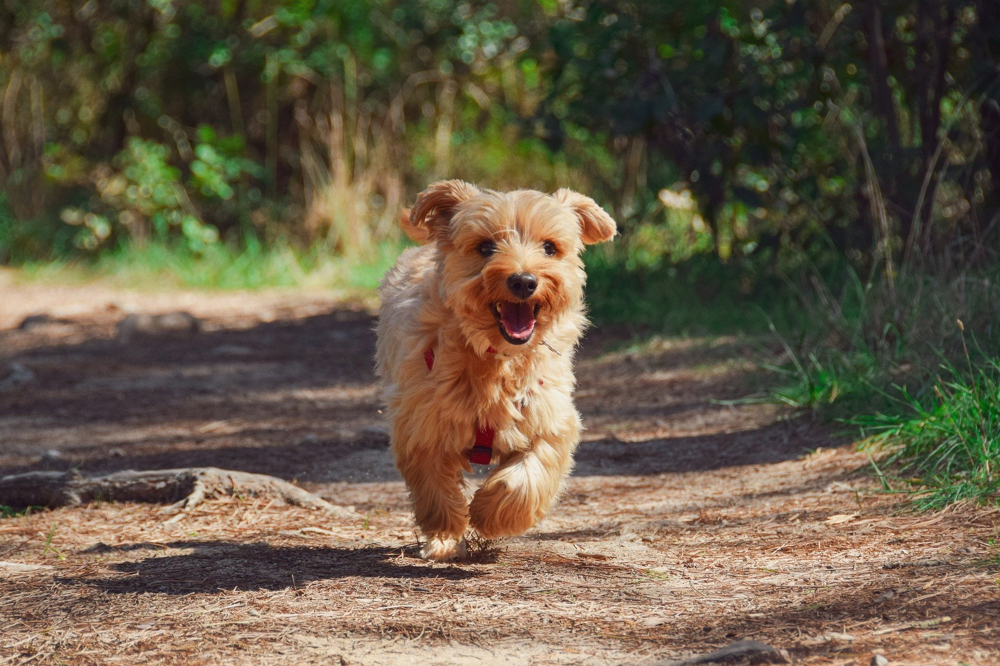

DOG
In Chinese characters, in addition to Gyeon (犬), it is written as Gu (狗) and Sul (戌). Ki (猉) and Gyo (狡) refer to small dogs.
Origin
Dogs are the first domesticated animals among wild animals, and their ancestors are said to be wolves and jackals, and it is also speculated that they arise from among wild species that became extinct after inhabiting in a semi-wild state in Australia or Southwest Asia. These wild species were domesticated in several regions of the world, and it is thought that about 200 varieties were created as at present by selection and crossbreeding among them. The oldest record of domestication and domestication by humans is from the Persian Berth Cave, estimated to be around 9500 BC. Estimated to be around 9000 B.C., the Schenberg dog of western Germany is very similar in size and skull shape to that of a dingo.
Characteristic
Depending on the breed, the size varies greatly, with a shoulder height of 8-90 cm, weight of 0.4-120 kg, long and short hair, and various colors and patterns. Some have a white pattern on the tip of the tail, a circular light pattern on the eyes, and a dark cross-shaped pattern on the shoulder. The auricles are large and there are those that hang down almost triangularly or stand up, and when they hang forward, they come down to the eyes, unlike raccoons. Unlike foxes and raccoons, their pupils are round. The lips are thick, the tip is not sharp, and there is a distinct hem from the nasal root to the inner part. Teeth almost regularly occur and change with age, so they can be used to measure age. Dogs have a sensitive sense of smell from birth to detect their mother's milk by smell. In addition, their hearing is also developed.
Life
Since dogs have been domesticated as livestock through many years, their shape changes drastically and their distribution is global. In the case of wild animals, several males and females form a group, but the ranking is fixed, and when it is not determined, they fight to determine superiority. The gestation period is 62-68 days, and breeding is possible after about one year after birth, and usually 4-6 babies are born at a time. The pups are breastfed for 6-7 weeks, but start eating soft food or semi-digested food that the mother vomits from around 4 weeks. Life expectancy is usually 12 to 16 years, but there are records of up to 34 years. Fighting dogs, game dogs, and competition dogs are relatively short-lived, but domestic dogs can live up to 20 years.
With People
In addition to hunting, shepherding, racing, search, and pet purposes, dogs are used for pulling sleds in Eskimos, Native Americans, Northeast Asia, and northern Siberia, and for carrying loads in Tibet. In Korea, since ancient times, Janggu was made from dog skin, rain was made from the tail, and coats and hats for cold weather were made from fur. It is said that Jeong Eom (鄭淹), the governor of Jeolla Province during the reign of King Jungjong of the Joseon Dynasty, used a native dog for telecommunication business and saved enormous communication costs. It is also used as a police dog or search dog for the purpose of chasing criminals because it can distinguish gender or individual with its developed sense of smell.
Tale
Dogs are loyal and loyal to humans, and there are many myths about loyal dogs in Korea. Uiguchong and Uigubi in Sillim-dong, Dogae-myeon, Seonsan-gun, Gyeongsangbuk-do, Uiguchong, Toseong-ri, Gwiseong-myeon, Yonggang-gun, Pyongannam-do, and Seonyo-ri, Pyongyang, and a dog tower in Bukchon-ri, Hongsan-myeon, Buyeo-gun, Chungcheongnam-do, etc. have. In 1282 (the 8th year of King Chungryeol), a dog took a blind child from an accident at Jingogae in Gaeseong and raised him with food and water.
Proverb
There are many proverbs in our country related to dogs.
It means that the original nature is difficult to fix, and it is said that ‘even if a dog’s tail is buried for three years, it will not become dirty.’
When people say they don't like what they usually like, they say, 'Dogs refuse to poop.' When it comes to earning money, it means 'to earn money like a dog and live like a nobleman.' It means 'to earn money like a dog and live like a nobleman.' do.
[Source: Encyclopedia of Korean National Culture (open)]
Gallery


- 